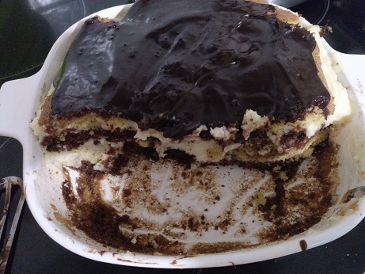

Grandma's Chocolate Lemon Cake

my cake's not a lie!
ingredients:
- butter 130g + 200g
- sugar 1 glass + 1 glass + 3 tbsp
- flour 1 glass
- cocoa 3 tsp + 4 tsp
- baking soda 1 tsp
- semolina 3 tbsp
- milk 2 glass
- eggs 3
- sour cream 4 tbsp
- lemons 2
- note: a glass is 250 ml
batter:
- add 130 g of melted butter to 1 glass of sugar (mix)
- add 3 eggs one by one
- add one glass of flour (240 g)
- add 1tsp of baking soda
- result: runny batter
- divide into two parts
- first half: put in a buttered dish
- bake @ 170-180 C about 20 min
- add 3 tsp of cocoa to the second half bake @ 170-180 C about 20 min
- divide each cake lengthwise into two (totaling four: two brown and two yellow)
cream:
- make semolina gruel: 2 glasses of milk and 3 tbsp of semolina (no sugar or salt added)
- when it cools, add juice and zest from the lemons
- mix 200 g of butter with 1 glass of sugar
- add to gruel, mix well and cool in the fridge for about 30 min
- stack the cakes, putting the cream between each layer
glaze:
- mix 4 tbsp of sour cream to 4 tsp of cocoa and 3 tbsp of sugar
- boil for 5 minutes, mixing thoroughly, then add a slice of butter and let reach boiling point
- top the cake with glaze from above